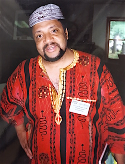
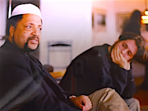

Winter has begun.
This week we have honored the Solstice, and in so doing have been reminded by the earth, sun, and elements that this is a season of transition. Life cycles have come to completion, laid to rest, as the soil and elements prepare for a new day.
For those of us who are Christian, this season is also recognized this as a time of patience. We turn internally, examining our wounds and frailties, before looking ahead to seek signs of a light that will beckon us to the promise of new birth.
In recent days, the life cycles of two extraordinary humans reached their transition points. These two individuals' lives were deeply intertwined with the Fellowship of Reconciliation. Today we take a breath and lift up blessings to honor the lives of Ibrahim Abdil-Mu'id Ramey and Peg Morton.

Ibrahim Ramey was born on December 10, 1949 -- International Human Rights Day (as he regularly reminded friends). A conscientious objector to war who converted to Islam during adulthood, Ibrahim worked for the War Resisters League for several years before joining the national staff of the Fellowship of Reconciliation in 1995.
Ibrahim spent a decade in FOR leadership, including distinguished service as disarmament coordinator and director of racial, economic, and social justice. He cofounded the I Will Not Kill campaign, and forecast the climate justice movement through pioneering efforts linking militarism, racism, and fossil fuels. He traveled globally on behalf of the Fellowship, participating in interfaith peace delegations to Iraq, Japan, and the World Social Forum in Brazil.
Ibrahim was also active in the Muslim Peace Fellowship ever since its founding in 1994. He wrote regularly for both Ansar As-Salam, the MPF newsletter, and Fellowship magazine, penning timely essays like "A Muslim View the Promise of Nonviolence" (1995), "Four Vignettes on the Road of the Broken Rifle: Reflections on War and Resistance" (2005), and "Race, Religion, and Reaction: Islam and the Struggle for American Religious Freedom and Equality" (2010).
Following his departure from FOR in 2006, Ibrahim joined the staff of the Muslim American Society Freedom Foundation in Washington, D.C. Serving as its director of civil and human rights, Ibrahim continued to partner with FOR and other national peace & justice groups, particularly in his role as vice president of the steering committee of the Religious NGO community at the United Nations.
FOR's Ethan Vesely-Flad said, "I had the pleasure of working with brother Ibrahim on many occasions, including a year of overlap on FOR's staff. What I will especially remember about this beautiful man is his warmth, humor, and compassionate spirit. In the midst of often difficult campaigns, Ibrahim always took the time to connect at the personal level, asking about one's family and well being and ensuring that we were, indeed, a model of reconciliation and fellowship."
This reflection by Matt Meyer, FOR member and long-time War Resisters International leader, likewise pays tribute to this wonderful human being who died at age 66 this month of multiple myeloma.
Ibrahim Ramey, Presente!

Peg Morton was born on October 31, 1930, and was described this Monday by the Eugene [Oregon] Register-Guard as "arguably Eugene's best-known peace activist."
A war tax resister and prolific correspondent to politicians and the media (she had a letter to the editor published on Dec. 10, a week prior to her death), Peg participated in countless civil disobedience actions. Her role in a 2004 protest at the School of the Americas led to a three-month prison sentence, while in her seventies. Another direct action in 2009 at the Oregon state capital forced a legal case that ended up in the Oregon Supreme Court.
Peg's ardent commitment to solidarity with human rights activists in the Americas, led to her strong support of FOR's Latin America and the Caribbean program during its quarter-century of work. John Lindsay-Poland, past FOR Latin America program officer, said, "Peg lived proactively and simply, always with deep principle infusing her friendships. I will miss her."
Peg was a steadfast Quaker whose deep spiritual commitments informed both her living acts as well as her decision to die by fasting. Her memoir, Feeling Light Within, I Walk: Tales, Reflections and Adventures of a Quaker Activist (2013, Cedar Row Press), gives voice to her passions and poignant life choices.
This week her friend Michelle Darr posted a 10-minute Youtube video of Peg reading from the book's final chapter, "Dying in the Light." On Monday, NPR affiliate KPCC broadcast a poignant three-minute interview profile conducted earlier this month, in which Peg directly connects her end-of-life fast to her peace commitments.
 FOR Executive Director Kristin Stoneking said, "As we headed into the longest night of the year, our dear friend Peg followed the true light within her all the way home. Peg was able to inspire others through her commitment, and her trust in the beauty and potential of life. Peg was able to inspire others with her passion, inviting all to journey with her, to risk with her, to feel the depths of the joy and sorrow of life with her -- this is true compassion -- passion with others. She will be missed on this physical earthly plane, but I have not doubt she will continue with us, ever inspiring us." FOR Executive Director Kristin Stoneking said, "As we headed into the longest night of the year, our dear friend Peg followed the true light within her all the way home. Peg was able to inspire others through her commitment, and her trust in the beauty and potential of life. Peg was able to inspire others with her passion, inviting all to journey with her, to risk with her, to feel the depths of the joy and sorrow of life with her -- this is true compassion -- passion with others. She will be missed on this physical earthly plane, but I have not doubt she will continue with us, ever inspiring us."
In the weeks before her death, Peg conceived a National Fast for Repentance and World Healing. She wrote a proposal that was distributed to peace activists around the country. We excerpt from that visionary message:
"I am envisioning the rise of a broad, nonviolent movement that calls for this country to face itself, to publicly and humbly acknowledge the suffering and destruction which we have been engaged in throughout our history and in the present. We need to seek forgiveness and to make amends. And we need to grieve. Many of us are feeling deep grief. We move in a variety of groups, but we are joined together in our pain, our horror, disgust, and discouragement as we carry in our hearts the very real threat to our planet, and the violence and suffering, both current and past that are and have been caused by United States policies and that are embedded in our sick and violent culture. We know that we are a part of that; we are called to respond, and we do respond as best we can. It is time to take another step that will help deepen and broaden our response. We cannot be healed as a society until we have deeply and honestly faced ourselves."
Peg Morton, Presente!
Images of Ibrahim: FOR archives. Images of Peg: FOR archives, CaringBridge. |